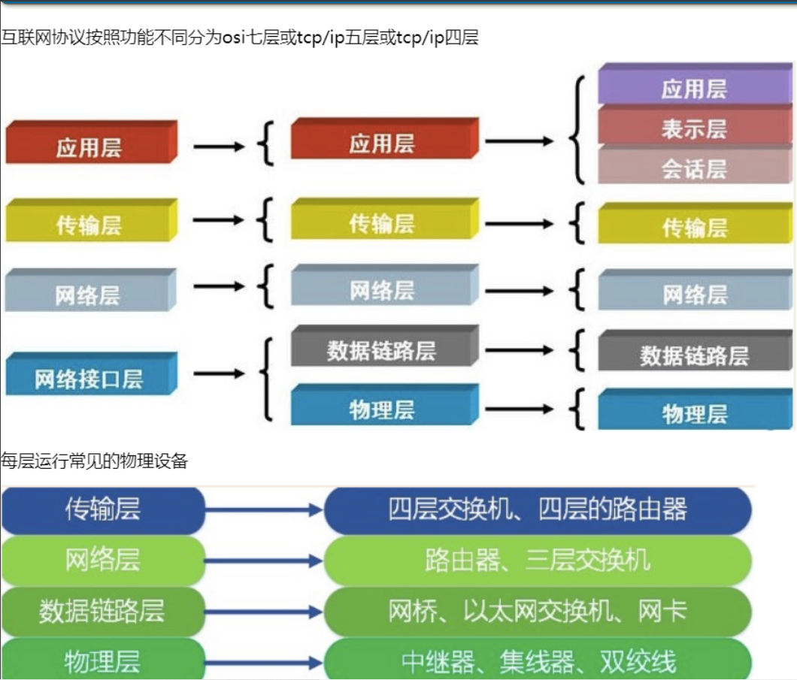

原文出处:本文由博客园博主corei5tj提供。
原文连接:https://www.cnblogs.com/tangjian219/p/11398186.html
原文连接:https://www.cnblogs.com/tangjian219/p/11398186.html
C/S,B/S架构
C/S是Client/Server，即客户端/服务器端架构，一种典型的两层架构。客户端与服务端的通信
C/S 优点和缺点
优点：（1）界面和操作可以很丰富
（2） 安全性能可以很容易保证，实现多层认证也不难
（3）由于只有一层交互，因此响应速度较快。
缺点：（1）适用面窄，通常用于局域网中
（2）用户群固定。由于程序需要安装才可使用，因此不适合面向一些不可知的用户
（3）维护成本高。发生一次升级，则所有客户端的程序都需要改变B/S 架构的概念
B/S是Browser/Server，即浏览器/服务器架构。浏览器与服务器的通信
Browser指的是Web浏览器，极少数事务逻辑在前端实现，但主要事务逻辑在服务器端实现，
Browser客户端，WebApp服务器端和DB端构成所谓的三层架构。
B/S架构的系统无须特别安装，只有Web浏览器即可。
B/S 优点和缺点
优点：（1）客户端无需安装，有Web浏览器即可
（2）BS架构可以直接放在广域网上，通过一定的权限控制实现多客户访问的目的，交互性较强。
（3）BS架构无需升级多个客户端，升级服务器即可。
缺点：（1）在跨浏览器上，BS架构不尽如人意。
（2）表现要达到CS程序的程度需要花费不少精力。
（3）在速度和安全性上需要花费巨大的设计成本，这是BS架构的最大问题。
（4）C和S交互是请求-响应模式，通常需要刷新页面，这并不是客户乐意看到的。
（在Ajax风行后此问题得到了一定程度的缓解）o s i协议
互联网协议按照功能不同分为o s i七层或t c p /i p五层或t c p/i p四层

1.物理层
物理层由来：上面提到，孤立的计算机之间要想一起玩，就必须接入internet，言外之意就是计算机之间必须完成组网
物理层功能：主要是基于电器特性发送高低电压(电信号)，高电压对应数字1，低电压对应数字0 使计算机之间产生联系
用光缆 电缆 双绞线 无线电波 连接2.数据链路层
数据链路层由来：单纯的电信号0和1没有任何意义，必须规定电信号多少位一组，每组什么意思
数据链路层的功能：定义了电信号的分组方式
交换机的mac地址学习功能:
一个交换机的5个接口: 5个计算机.
1: FF-FF-FF-FF-FF-FF
2: FF-FF-FF-FF-FF-FF
3: FF-FF-FF-FF-FF-FF
4: FF-FF-FF-FF-FF-FF
5: FF-FF-FF-FF-FF-FF
接口1: 源mac 1C-1B-0D-A4-E6-44 目标1C-1C-0D-A4-E5-44 |数据 以广播的形式发出
2,3,4,5口都会接收到消息,5口是最终的目标地址,交换机就会将5口与mac地址对应上.
1: 1C-1B-0D-A4-E6-44
2: FF-FF-FF-FF-FF-FF
3: FF-FF-FF-FF-FF-FF
4: FF-FF-FF-FF-FF-FF
5: 1C-1C-0D-A4-E5-44
### 以太网协议:对比特流进行合理的分组.
一组数据01010101 叫做一帧,数据报.
head data(数据)
head是固定长度的:18字节
源地址: 6个字节
目标地址: 6个字节
数据类型: 6个字节
### mac地址:就是你的计算机上网卡上标注的地址.
12位16进制数组成 :前六位是厂商编号,后六位是流水线号.
源mac地址 目标mac地址 数据类型 | data
计算机的通信方式:同一个局域网内,通过广播的形式通信. 软件和软件的通信3.网络层
### IP协议:确定局域网(子网)的位置. 找到具体软件的位置,上一层的事情
i p地址:四段分十进制 192.168.0.12
取值范围 0--255.0--255.0--255.0--255
子网掩码: C类子网掩码: 255.255.255.0
ip地址 + 子网掩码 按位与运算 计算出是否在统一局域网(子网,网段).
计算172.16.10.1 与 172.16.10.128
172.16.10.1：10101100.00010000.00001010.00000001
255.255.255.0: 11111111.11111111.11111111.00000000
从属于的局域网: 172.16.10.0
172.16.10.128：10101100.00010000.00001010.10000000
255.255.255.0: 11111111.11111111.11111111.00000000
从属于的局域网: 172.16.10.0
172.16.10.1 ~172.16.10.255
C类子网掩码 一个网段最多可以承载多个IP地址?
172.16.10.0 被占用.
172.16.10.255 广播地址 被占用.
172.16.10.1 被占用.
253台计算机arp协议:
> 局域网网络中实际传输的是“帧”，帧里面是有目标主机的MAC地址的。
> 在以太网中，主机与主机相互通信，必须要知道目标主机的MAC地址。要想获得目标主机的MAC地址，需要通过地址解析协议进行解析。
“地址解析”： 就是主机在发送帧前将目标IP地址转换成目标MAC地址的过程。
> ARP协议的基本功能就是通过目标设备的IP地址，查询目标设备的MAC地址，以保证通信的顺利进行。
> 点对点的连接是不需要ARP协议的
1. 每台主机都会有一个ARP缓冲区，该缓冲区记录了IP地址和MAC地址的对应关系，称为ARP高速缓存表。
2. 当源主机将一个数据包发送到目的主机时，会先检查自己 ARP缓存表中是否存在该 IP地址对应的MAC地址，如果有﹐就直接将数据包发送到这个MAC地址；
如果没有，就以广播形式向本地网段发起一个ARP请求，查询此目的主机对应的MAC地址。此ARP请求数据包里包括源主机的IP地址、硬件地址、以及目的主机的IP地址。
3. 网络中所有的主机收到这个ARP请求后，会检查数据包中的目的IP是否和自己的IP地址一致。
如果不相同就忽略此数据包；
如果相同，该主机首先将发送端的MAC地址和IP地址添加到自己的ARP缓存表中，
如果ARP缓存表中已经存在该IP的信息，则将其覆盖更新，然后给源主机发送一个 ARP响应数据包，告诉对方自己是它需要查找的MAC地址；
4. 源主机收到这个ARP响应数据包后，将得到的目的主机的IP地址和MAC地址添加到自己的ARP列表中，利用此信息进行数据的传输。
如果源主机一直没有收到ARP响应数据包，表示ARP查询失败。
前提:知道目标mac:
计算机A 发送一个消息给 计算机B
源码mac 目标mac 源IP 目标IP 数据
单播的形式发送到交换机,交换机会检测自己的对照表有没有目标mac,如果有,单播传.如果没有,交由上一层: 路由器:
路由器收到消息: 对消息进行分析:
要确定目标计算机与本计算机是否在同一网段,
如果在同一网段,直接发送给对应的交换机,交换机在单播发给目标mac.
如果不是在同一网段: ?
前提:不知道目标mac:
计算机A 发送一个消息给 计算机B
源码mac 目标mac不知道 源IP 目标IP 数据
单播的形式发送到交换机,交换机交由上一层路由器:路由器收到消息: 对消息进行分析:
要确定目标计算机与本计算机是否在同一网段,
如果在同一网段通过 IP以及ARP协议获取到对方的mac地址,然后在通信.4.传输层
### 端口协议: 确定软件在计算机的位置
端口协议: UDP协议,TCP协议
65535端口
1~1024操作系统专门使用的端口
举例: 3306 数据库
自己开发软件都是8080以后的端口号
TCP（Transmission Control Protocol）可靠的、面向连接的协议（eg:打电话）、流式协议, 传输效率低全双工通信（发送缓存&接收缓存）、面向字节流。使用TCP的应用：Web浏览器；文件传输程序。
UDP（User Datagram Protocol）不可靠的、无连接的服务，传输效率高（发送前时延小），一对一、一对多、多对一、多对多、面向报文(数据包)，尽最大努力服务，无拥塞控制。使用U DP的应用：域名系统 (DNS)；视频流；IP语音(VoIP)。
TCP议的三次握手

TCP协议的四次挥手

为什么是4次挥手?
因为当Server端收到Client端的SYN连接请求报文后，可以直接发送SYN+ACK报文。其中ACK报文是用来应答的，SYN报文是用来同步的。但是关闭连接时，当Server端收到FIN报文时，很可能并不会立即关闭SOCKET，所以只能先回复一个ACK报文，告诉Client端，"你发的FIN报文我收到了"。只有等到我Server端所有的报文都发送完了，我才能发送FIN报文，因此不能一起发送。故需要四步握手。5.应用层
自己定义的协议.
广播(局域网内) + mac地址(计算机位置) + ip(局域网的位置) + 端口(软件在计算机的位置)
有了以上四个参数:你就可以确定世界上任何一个计算机的软件的位置.基于TCP协议的socket的简单通信
服务端
import socket
phone = socket.socket() #当基于TCP时 括号可以不写参数 不写参数默认TCP
phone.bind(("127.0.0.1",8848)) #本地回环 IP和端口就能确定世界上任意一台计算机的软件位置 以为有ARP协议 通过IP获取Mac地址 服务端要绑定一个明确的IP和端口号
phone.listen(5) #监听 5可写可不写
conn,addr = phone.accept() #阻塞 等待客户端连接 客户端连接成功后把 管道和客户端IP地址给conn和addr
from_client = conn.recv(1024*1024)#接受的客户端数据大小
print(f"来自客户端的消息:{from_client.decode('utf-8')}")
to_client = input("请输入:")
conn.send(to_client.encode('utf-8'))
conn.close() #先关闭通道 如果不先关闭就会在内存中有管道残留
phone.close() #在关闭phone
#先启动服务端 在启动客户端
客户端
import socket
phone = socket.socket() #phone是socket实例的对象
phone.connect(("127.0.0.1",8848)) #主动初始化TCP服务器连接 访问服务端的IP和端口号 找这个IP和端口
to_server = input("请输入:").strip().encode('utf-8')
phone.send(to_server) #发送
from_server = phone.recv(1024*124) #接受服务端的数据大小
print(f"来自服务端的消息{from_server}")
phone.close() 基于TCP协议的socket的循环通信
客户端
import socket
phone = socket.socket()
phone.connect(('127.0.0.1',8848))
while 1:
to_rerver = input("请输入:").strip().encode("utf-8")
if not to_rerver:
print("输入内容不能为空")
continue
phone.send(to_rerver)
if to_rerver.upper() == b"Q":
break
from_server = phone.recv(1024*1024)
print(f"来自服务端的消息{from_server.decode('utf-8')}")
phone.close()
服务端
import socket
phone = socket.socket() #当基于TCP时 括号可以不写参数 不写参数默认TCP
phone.bind(("127.0.0.1",8848)) #本地回环
phone.listen(5) #监听 5可写可不写
conn,addr = phone.accept() #阻塞 等待客户端连接 客户端连接成功后把 管道和客户端IP地址给conn和addr
while 1:
try:
from_client = conn.recv(1024*1024)#接受的数据大小
if from_client.upper() == b"Q":
break
print(f"来自客户端的消息:{from_client.decode('utf-8')}")
to_client = input("请输入:")
conn.send(to_client.encode('utf-8'))
except ConnectionResetError:
break
conn.close() #先关闭通道 如果不先关闭就会在内存中有管道残留
phone.close()基于TCP协议的socket的 链接+循环 通信
服务端
import socket
phone = socket.socket() #当基于TCP时 括号可以不写参数 不写参数默认TCP
phone.bind(('127.0.0.1',8848))
phone.listen(5) #有一个处于连接状态,有5个处于等待连接状态 多了会报错
while 1:
conn,addr = phone.accept() #可以开多个客户端,但必须是第一个客户端关闭后执行第二个客户端
while 1:
try:
from_client_info = conn.recv(1024*1024)
print(f"来自客户端{addr}的消息是:{from_client_info.decode('utf-8')}")
if from_client_info.upper() == b"Q": #当接收到的客户端内容为q/Q时 退出
break
to_client = input("请输入:")
conn.send(to_client.encode("utf-8"))
except Exception:
break
conn.close() #退出时关闭该通道
phone.close()
客户端
import socket
phone = socket.socket() #当基于TCP时 括号可以不写参数 不写参数默认TCP
phone.connect(('127.0.0.1',8848))
while 1:
to_server = input("请输入:")
phone.send(to_server.encode("utf-8"))
if not to_server:
print("输入内容不能为空") #当输入内容按回车时,会在服务端形成阻塞,因为输入内容为空,空字符串为False
continue
from_server = phone.recv(1024*1024)
if to_server.upper() == "Q":
break
print(f"来自服务端的信息是:{from_server.decode('utf-8')}")
phone.close()用socket远程执行命令
服务端
import subprocess
import socket
phone = socket.socket() #当基于TCP时 括号可以不写参数 不写参数默认TCP
phone.bind(('127.0.0.1',8848))
phone.listen(3)
while 1:
conn,addr = phone.accept()
while 1:
try:
from_client_info = conn.recv(1024*1024)
print(f"来自客户端{addr}的消息是:{from_client_info.decode('utf-8')}")
if from_client_info.upper() == b"Q":
break
obj = subprocess.Popen(from_client_info.decode('utf-8'), #接收客户端的命令 cmd
shell=True,
stdout=subprocess.PIPE,
stderr=subprocess.PIPE,
# print(obj.stdout.read().decode('gbk')) # 正确命令
# print(obj.stderr.read().decode('gbk')) # 错误命令
)
s = obj.stdout.read() + obj.stderr.read()
conn.send(s) #执行命令结果发送给客户端(gbk)
except Exception:
break
conn.close()
phone.close()
客户端
import socket
phone = socket.socket() #当基于TCP时 括号可以不写参数 不写参数默认TCP
phone.connect(('127.0.0.1',8848))
while 1:
to_rerver = input("请输入:").strip().encode("utf-8")
if not to_rerver:
print("输入内容不能为空")
continue
phone.send(to_rerver)
if to_rerver.upper() == b"Q":
break
from_server = phone.recv(1024*1024)
print(f"{from_server.decode('gbk')}") #接收到的数据用gbk解码
phone.close()
有bug 当输入数据超过接收上限时.'gbk' codec无法解码位置为1023的字节0xbb:不完整的多字节序列展示收发问题
只要send一次 就需要设置编码 需要设置成bytes类型
服务端(发一次收多次)
import socket
phone = socket.socket() #当基于TCP时 括号可以不写参数 不写参数默认TCP
phone.bind(("127.0.0.1",8848))
phone.listen(5)
conn,addr = phone.accept()
from_client_data = conn.recv(3) #限制接收的字节数为3个 hel
print(f"来自客户端的消息{from_client_data.decode('utf-8')}")
from_client_data = conn.recv(3) #lo
print(f"来自客户端的消息{from_client_data.decode('utf-8')}")
from_client_data = conn.recv(3) #wor
print(f"来自客户端的消息{from_client_data.decode('utf-8')}")
from_client_data = conn.recv(3) #ld
print(f"来自客户端的消息{from_client_data.decode('utf-8')}")
conn.close()
phone.close()
客户端(发一次收多次)
import socket
phone = socket.socket()
phone.connect(("127.0.0.1",8848))
phone.send(b'hello world') #总字节数为11
phone.close()
*****************************************************************************************************
服务端(发多次收一次)
import socket
phone = socket.socket() #当基于TCP时 括号可以不写参数 不写参数默认TCP
phone.bind(("127.0.0.1",8848))
phone.listen(5)
conn,addr = phone.accept()
from_client_data = conn.recv(3) #限制几个字节就接收几个字节 接受hel
print(f"来自客户端的消息{from_client_data.decode('utf-8')}")
conn.close()
phone.close()
客户端(发多次收一次)
import socket
phone = socket.socket() #当基于TCP时 括号可以不写参数 不写参数默认TCP
phone.connect(("127.0.0.1",8848))
phone.send(b"he") #先发he
phone.send(b"llo") #在发llo
phone.close()
*****************************************************************************************************
服务端(发多次收多次)
import socket
phone = socket.socket() #当基于TCP时 括号可以不写参数 不写参数默认TCP
phone.bind(("127.0.0.1",8848))
phone.listen(5)
conn,addr = phone.accept()
from_client_data = conn.recv(1024) hellowor #总字节数为8,当字节大于总字节时会全部接收 当小于总字节时会接收限制字节,剩余的字节在下一次接收
print(f"来自客户端的消息{from_client_data.decode('utf-8')}")
from_client_data = conn.recv(3)
print(f"来自客户端的消息{from_client_data.decode('utf-8')}")
conn.close()
phone.close()
客户端(发多次收多次)
import socket
phone = socket.socket() #当基于TCP时 括号可以不写参数 不写参数默认TCP
phone.connect(("127.0.0.1",8848))
phone.send(b"he")
phone.send(b"llo")
phone.send(b"wor")
phone.close()粘包
黏包现象: 产生黏包现象的根本原因是缓冲区.
所谓粘包问题主要还是因为接收方不知道消息之间的界限，不知道一次性提取多少字节的数据所造成的。
什么是黏包现象: 基于tcp协议的socket.客户端接收不完,下一次将继续接收(如果间隔时间相对过长,后续的数据会与之前的数据黏在一起),send数据时.连续发送少量的数据(时间间隔很短),这些数据会积压在一起发送出去.
系统缓冲区的作用:
如果没有缓冲区,在你的网络出现短暂的异常或者波动,接收数据就会出现短暂的中断,影响你的下载或者上传的效率.
但是凡事都是双刃剑,缓冲区解决了上传下载的传输效率的问题,带来了黏包问题
什么情况下会产生黏包?
recv会产生黏包(如果recv接收的数据量小于发送的数据量,第一次只能接收规定的数据量,第二次只能接收剩余的数据量)
send也可能发生黏包现象.(连续send少量的数据发送到输出缓冲区,由于缓冲区的机制,也可能在缓冲区中不断的积压,多次写入的数据被一次性发送到网络)
解决黏包的方案
错误示例:
扩大recv的上限,不是解决这个问题的根本方法,这些会存放的内存中,占用内存.
故意延长recv的时间, 使用sleep 会非常影响效率low版解决粘包问题
问题的根源在于，接收端不知道发送端将要传送的字节流的长度，所以解决粘包的方法就是围绕，如何让发送端在发送数据前，把自己将要发送的字节流总数按照固定字节发送给接收端后面跟上总数据，然后接收端先接收固定字节的总字节流，再来一个死循环接收完所有数据。
弊端:不能接收很大的数据
******服务端******
import socket
import subprocess
import struct
phone = socket.socket() #当基于TCP时 括号可以不写参数 不写参数默认TCP
phone.bind(('127.0.0.1',8848))
phone.listen(2)
# listen: 2 允许有两个客户端加到半链接池，超过两个则会报错
while 1:
conn,addr = phone.accept() # 等待客户端链接我,阻塞状态中
# print(f'链接来了: {conn,addr}')
while 1:
try:
from_client_data = conn.recv(1024) # 接收命令
if from_client_data.upper() == b'Q':
print('客户端正常退出聊天了')
break
obj = subprocess.Popen(from_client_data.decode('utf-8'),
shell=True,
stdout=subprocess.PIPE,
stderr=subprocess.PIPE,
)
result = obj.stdout.read() + obj.stderr.read()
total_size = len(result)
print(f'总字节数：{total_size}')
# 1. 制作固定长度的报头 报头head和数据data两部分
head_bytes = struct.pack('i',total_size)
# 2. 发送固定长度的报头
conn.send(head_bytes)
# 3. 发送总数据
conn.send(result)
except ConnectionResetError:
print('客户端链接中断了')
break
conn.close()
phone.close()
*******客户端******
import socket
import struct
phone = socket.socket() #当基于TCP时 括号可以不写参数 不写参数默认TCP
phone.connect(('127.0.0.1',8848))
while 1:
to_server_data = input('>>>输入q或者Q退出').strip().encode('utf-8')
if not to_server_data:
# 服务端如果接受到了空的内容，服务端就会一直阻塞中，所以无论哪一端发送内容时，都不能为空发送
print('发送内容不能为空')
continue
phone.send(to_server_data)
if to_server_data.upper() == b'Q':
break
# 1. 接收报头
head_bytes = phone.recv(4)
# 2. 反解报头
total_size = struct.unpack('i',head_bytes)[0]
total_data = b''
while len(total_data) < total_size:
total_data += phone.recv(1024)
print(len(total_data))
print(total_data.decode('gbk'))
phone.close()高大上版解决粘包问题
解决传输很大的数据
服务端
1.自定义报头{'file_name':xx,'md5':xxxxxxxxx,'数据长度':数据长度的变量}
2.json形式的报头 json.dumps
3.bytes形式的报头 encode
4.获取bytes形式的报头总字节数 len
5.将不固定的int总字节数变成固定长度的4个字节 struct.pack
6.发送4个字节的报头
7.发送报头数据
8.发送总数据
客户端
1.接收服务端发送的报头 (几个字节)
2.计算报头内数据的长度 int类型 struct.unpack
3.接收数据(接收数据的大小,上一步) 报头的数据为字节形式bytes,在解码
# head_json_decode = phone.recv(head_size).decode('utf-8')
# head_size接收数据的大小
# phone.recv(head_size) 接收该数据大小的数据
# 报头的数据为字节形式bytes 在解码
# {"file_name": "text", "md5": 561554515132659797, "total_size": 400}
4.用json.loads转化回去 转成字典(原来的数据类型)
5.服务端的自定义报头字典(通过键取值,取数据大小)
****服务端****
import socket
import subprocess
import struct
import json
phone = socket.socket()
phone.bind(("127.0.0.1",8848))
phone.listen(5)
while 1:
conn,addr = phone.accept()
while 1:
try:
from_client = conn.recv(1024)
# if from_client.upper() == b"Q":
# break
obj = subprocess.Popen(from_client.decode('utf-8'),
shell = True,
stdout = subprocess.PIPE,
stderr = subprocess.PIPE)
s = obj.stdout.read()+obj.stderr.read()
total_size = len(s)
# 1.自定义报头
head_dic ={
'file_name':'text',
'md5':561554515132659797,
'total_size':total_size,
}
# 2.json形式的报头
head_dic_json = json.dumps(head_dic)
#json形式的报头:{"file_name": "text", "md5": 561554515132659797, "total_size": 400}
# 3.bytes形式的报头
head_dic_json_bytes = head_dic_json.encode('utf-8')
#bytes形式的报头:b'{"file_name": "text", "md5": 561554515132659797, "total_size": 400}'
# 4.获取bytes形式的报头总字节数
len_head_dic_json_bytes = len(head_dic_json_bytes)
#获取bytes形式的报头总字节数:67
# 5.将不固定的int总字节数变成固定长度的4个字节
four_head_bytes = struct.pack("i",len_head_dic_json_bytes)
#将不固定的int总字节数变成固定长度的4个字节:b'C\x00\x00\x00'
# 6.发送4个字节的报头
conn.send(four_head_bytes)
# 7.发送报头数据
conn.send(head_dic_json_bytes)
# 8.发送总数据
conn.send(s)
except Exception:
break
conn.close()
phone.close()
****客户端*****
import socket
import struct
import json
phone = socket.socket()
phone.connect(("127.0.0.1",8848))
while 1:
to_server = input("请输入:")
if not to_server:
print("输入内容不能为空")
continue
elif to_server.upper() == "Q":
break
phone.send(to_server.encode('utf-8'))
head_data = phone.recv(4) #接收服务端发送的报头 4个字节
head_size = struct.unpack("i",head_data)[0] #计算报头内数据的长度 int类型
head_json_decode = phone.recv(head_size).decode('utf-8')
# head_size接收数据的大小
# phone.recv(head_size) 该数据大小的数据
# 报头的数据为字节形式bytes 在解码{"file_name": "text", "md5": 561554515132659797, "total_size": 400}
head_json = json.loads(head_json_decode) #转化回去 转成字典(原来的数据类型)
data_len = head_json['total_size'] #服务端的自定义报头字典
head_k = b""
while len(head_k) < data_len:
head_k += phone.recv(1024)
print(head_k.decode('gbk'))
print(len(head_k))
phone.close()
文件的上传与下载
客户端------>服务端 上传
客户端发送
制定file_name(自定义)
{file_path:要发送的文件的具体路径
file_name:要发送文件的文件名
file_size:None}
服务度接收
file_postion = r"路径" 发送到哪个具体的文件夹下,是文件夹的路径 不是文件夹下文档的路径
file_path = os.path_join(file_postion,要发送哪个文件的名字)
服务端------->客户端 下载
类似同上
-----------------------------------------------------------------------------------------------------
服务端
import socket
import subprocess
import json
import struct
phone = socket.socket(socket.AF_INET, socket.SOCK_STREAM)
phone.bind(('127.0.0.1', 8001))
phone.listen(5)
file_positon = r'd:\上传下载'
conn, client_addr = phone.accept()
# # 1，接收固定4个字节
ret = conn.recv(4)
#
# 2,利用struct模块将ret反解出head_dic_bytes的总字节数。
head_dic_bytes_size = struct.unpack('i',ret)[0]
#
# 3,接收 head_dic_bytes数据。
head_dic_bytes = conn.recv(head_dic_bytes_size)
# 4,将head_dic_bytes解码成json字符串格式。
head_dic_json = head_dic_bytes.decode('utf-8')
# 5,将json字符串还原成字典模式。
head_dic = json.loads(head_dic_json)
file_path = os.path.join(file_positon,head_dic['file_name'])
with open(file_path,mode='wb') as f1:
data_size = 0
while data_size < head_dic['file_size']:
data = conn.recv(1024)
f1.write(data)
data_size += len(data)
conn.close()
phone.close()
-----------------------------------------------------------------------------------------------------
客户端
import socket
import struct
import json
import os
phone = socket.socket(socket.AF_INET, socket.SOCK_STREAM) # 买电话
phone.connect(('127.0.0.1', 8001)) # 与客户端建立连接， 拨号
# 1 制定file_info
file_info = {
'file_path': r'D:\lnh.python\pyproject\PythonReview\网络编程\08 文件的上传下载\low版\aaa.mp4',
'file_name': 'aaa.mp4',
'file_size': None,
}
# 2 获取并设置文件大小
file_info['file_size'] = os.path.getsize(file_info['file_path'])
# 2，利用json将head_dic 转化成字符串
head_dic_json = json.dumps(file_info)
# 3,将head_dic_json转化成bytes
head_dic_bytes = head_dic_json.encode('utf-8')
# 4，将head_dic_bytes的大小转化成固定的4个字节。
ret = struct.pack('i', len(head_dic_bytes)) # 固定四个字节
# 5, 发送固定四个字节
phone.send(ret)
# 6 发送head_dic_bytes
phone.send(head_dic_bytes)
# 发送文件：
with open(file_info['file_path'],mode='rb') as f1:
data_size = 0
while data_size < file_info['file_size']:
# f1.read() 不能全部读出来，而且也不能send全部，这样send如果过大，也会出问题，保险起见，每次至多send(1024字节)
every_data = f1.read(1024)
data_size += len(every_data)
phone.send(every_data)
phone.close()
-----------------------------------------------------------------------------------------------------